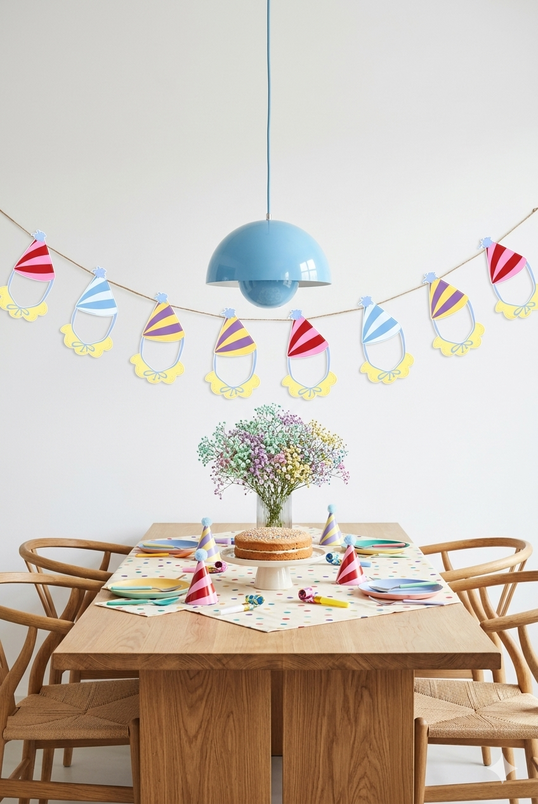

Advent — reusable activity wall
See Advent on Kids DesignThe Advent design comes with a background poster and a character sheet. Print both, cut out the characters and laminate them — then attach with velcro for an activity wall your child can rearrange again and again.
Print the background poster and the character sheet at your preferred size.
Cut carefully around each character, leaving a small border.
Laminate the characters so they can be handled again and again.
Stick small velcro dots on the back of each character and on the poster — and play!


Birthday card — homemade garland
See template on Digital TemplatesPrint several copies of the birthday invitation, swap in a different photo for each one, and you have the makings of a totally personal homemade decoration.
Use different photos in each — different expressions make it more fun.
Cut around the hat shape, leaving a small border if you like.
Use a hole punch at the top of the birthday hat.
Thread all the cards onto a piece of string or twine — instant garland!
